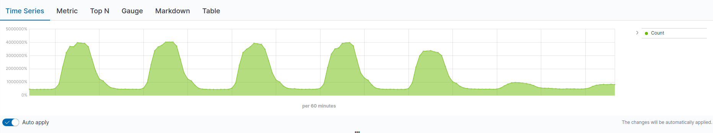
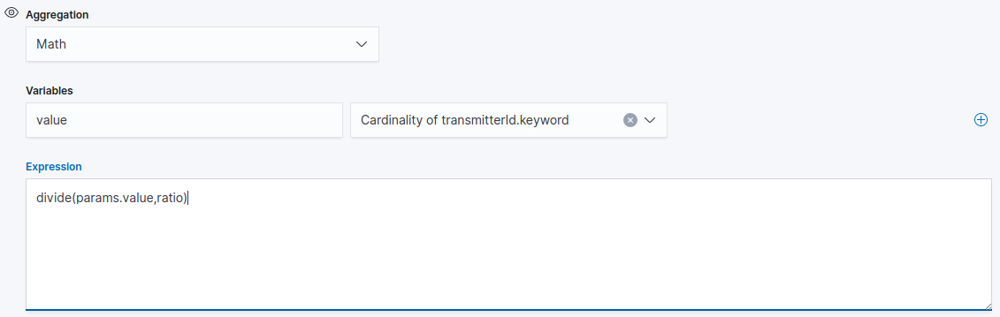
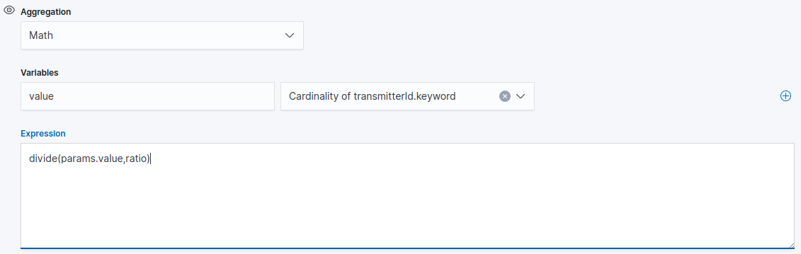
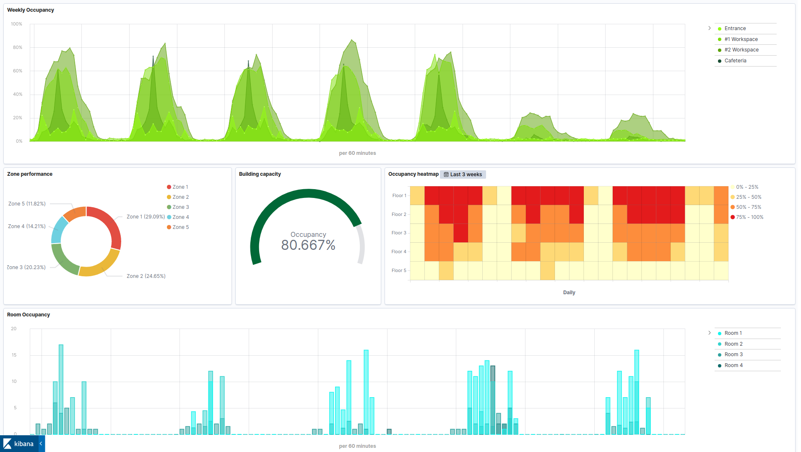

Create a TSVB in Kibana to understand space utilization
Our step-by-step guide to create a TSVB visualization in Kibana and gives an understanding of how spaces are used over the week.
The TL;DR (Too Long; Didn't Read)
Learn how we at reelyActive use Kibana TSVB to analyse and compare zone utilization.
- What will this accomplish?
- A visualization of how spaces are used by comparing areas between them over the same time and visualize results through a time series graph.
- Is there an easier way?
- Manual counts and analysis of people/device using pen and paper?
- So why would I read this?
- To learn both how and why to analyse space utilization with TSVB.
Prerequisites
reelyActive open source software with Elasticsearch and Kibana.
-

[Optional] Prepare a reelyActive laptop from scratch
Includes our step-by-step guide to install Elasticsearch and Kibana on a Linux computer/server. -

[Optional] Set up a hosted Elasticsearch Service
Includes our step-by-step guide to setup Elastic's convenient hosted cloud service.
In order for there to be data to visualise, the reelyActive software must also have collected and written raddec data to Elasticsearch.
Creating a new TSVB visualisation Step 1 of 3
Create a TSVB in Kibana
- What's a TSVB ?
- A Time Series Data Visualizer which provides a UI to achieve the features of Timelion and gives many ways of showing data.
- Why Kibana?
- Kibana makes it easy to visualise data from an Elasticsearch database, where the source data is stored.
Open Kibana and then:
- Select the Visualize tab from the left menu bar
- Click the Create a Visualization button
- Select the TSVB chart
The default settings will result in a time series visualization with unfiltred data. The next step will be to define a meaningful filters in order to reduce the unnecessary information that can confuse the analysis.
Defining TSVB Metrics Step 2 of 3
Define a meaningful set of metrics and filters to understand zone performance
- What's a Metric?
- A metric visualization displays a single number for each aggregation you select.
- What's filtering data?
- This means the data sets are refined by removing data that can be repetitive or irrelevant.
Cardinality Aggregation Part 1
Cardinality means the number of distinct values in a table column. By choosing the field transmitterId.keyword that will count the transmitters once and will reduce the number of counts effectively.
- Select Cardinality from the Aggregation pull-down in the Metrics tab
- Select transmitterId.keyword from the Field pull-down
Location Filter Part 2
Each sensors has a fixe position and refers to a location, ex: room, zone, floor etc. Define which zone you want to compare by entering each location in a specific filter as below:
- Select Filters from the Group by pull-down
- Enter receiverId.keyword: and type the ID of the sensor
- From the Label input type the name of the location where the sensor is set up
Distance Filter Part 3
RSSI is used to approximate distance between the device and the sensor. At maximum Broadcasting Power the RSSI ranges from -35 (a few inches) to -100 (40-50 m distance). By applying RSSI filters you can display only tags within a certain distance.
- Complete the filter input and separate the expressions by entering and
- Enter rssi: and type the rssi threshold
Transmitter Type Filter Part 4
To measure anonymously the occupation of spaces, our sensors detect Bluetooth devices that people already carry on them (smartphones). Bluetooth devices such as smartphone use a 48-bit random device address which is classified as 3. This filter removes most devices that are not associated with people like smart TV.
- Complete the filter input and separate the expressions by entering and
- Enter transmitterIdType: and enter the value 3 which refers to Random 48-bit advertiser address (BLE)
Number Of Decoding Filter Part 5
In most cases, devices are decoded multiple times. A decode filter is used to suppress all noise signals decoded only a few times.
- Complete the filter input and separate the expressions by entering and
- Enter numberOfDecodings: and enter the threshold
Analysing data Step 3 of 3
Analyse data and identife trends and patterns
- What's a trend?
- A general tendency of a set of data to change.
- What's a pattern?
- Data doesn't have to follow a trend, always going up or down over time. A pattern is a when data repeats in a predictable way.
By default the captured data are presented in numbers and do not reflect the exact number of people present in the spaces for many reasons:
To protect mobile devices from being tracked as they move there is a technique known as MAC address randomization. This replaces the number that uniquely identifies a device's wireless hardware with randomly generated values.
Moreover, the captured data come from devices that are mainly worn by people. Most likely, some people have more than one device for work and personal reasons.
This is why the data sensed by the reelyactive sensors does not constitute a people counter but reflects the occupancy trends.
Visualize the data in percentage as below:
- From the Metrics tab, add an Aggregation
- Choose Math Aggregation
- Enter the format '0%'
To reduce the percentage to one hundred, it is possible to divide the data by a ratio.
- From the Filters from the Group by pull-down
- Choose Custom from the data formatter pull-down
- Name the variable and select the option
- Entre the expression:
divide(params.value,ratio)where the ratio is a determinated number
 

This visualisation can be combined with other visualisations as part of a space occupancy dashboard, such as that below.
Where to next?
Create other visualizations, or continue exploring our open architecture and all its applications.
-

reelyActive Kibana integration overview
Find links to all our Kibana tutorials. -

diyActive Home
The home for reelyActive developers.